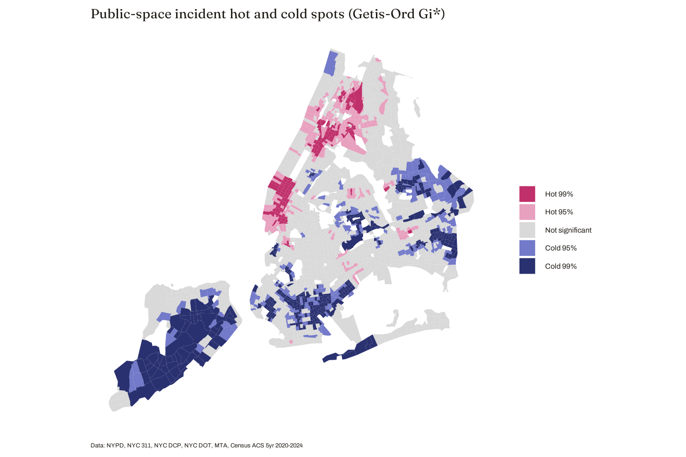

02 · Where it happens
A single connected region, from the South Bronx and Harlem to Midtown
Incidents cluster strongly
Public-space incidents concentrate in Midtown Manhattan and extend into Harlem and the South Bronx, with secondary clusters in Downtown Brooklyn, Jamaica Center and Flushing's Main Street in Queens, and Coney Island's commercial district.
Global Moran's I = 0.510, p < 0.001
368 hot spots, 502 cold spots
Getis-Ord Gi* identifies hot spots concentrated in Manhattan's commercial areas, extending into Harlem and the South Bronx, while cold spots sit in Staten Island, southern Brooklyn, and eastern Queens.
Getis-Ord Gi*, tract level
Connected, not scattered
The High-High group is a single connected region running down Manhattan's commercial areas from the South Bronx and Harlem to Midtown. The Low-Low group comprises low-density, car-oriented residential areas away from subways. The few spatial outliers are isolated nodes in quiet surroundings, or in parks and institutional areas.
LISA · pseudo p < 0.0001 for core clusters


Fig. 3 — Hot and cold spots (Getis-Ord Gi*): 368 hot, 502 cold.">